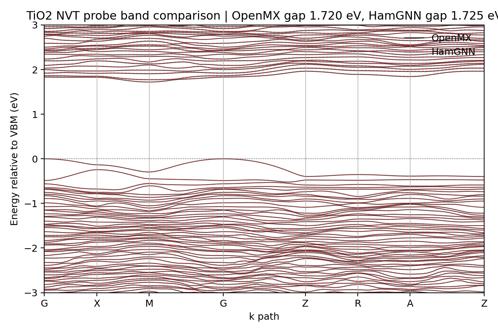
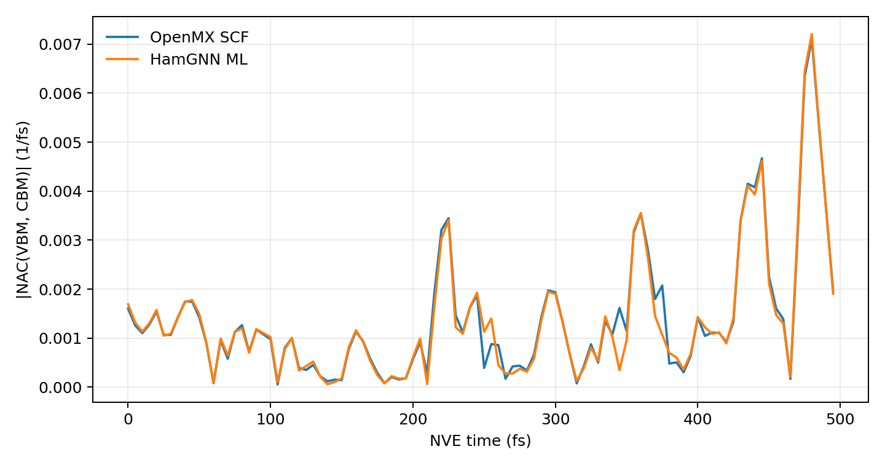
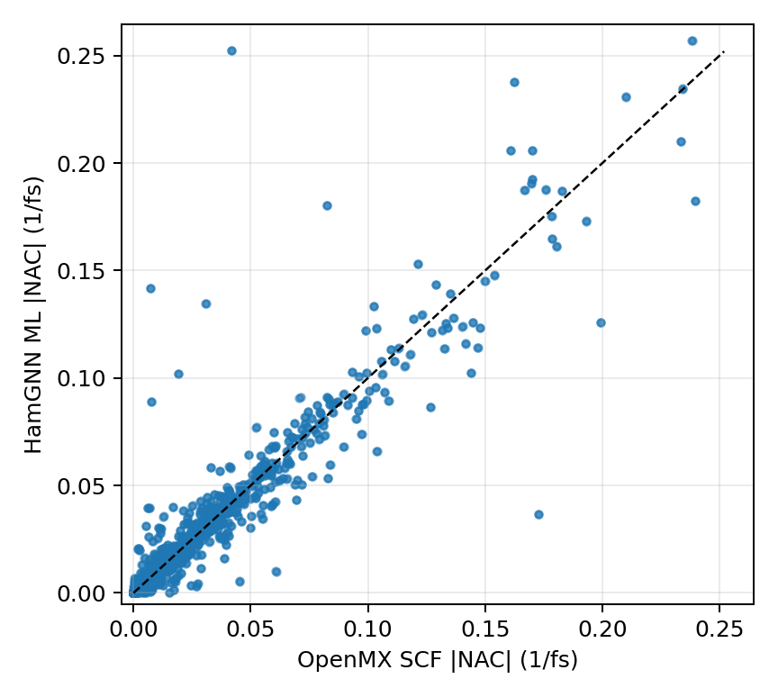
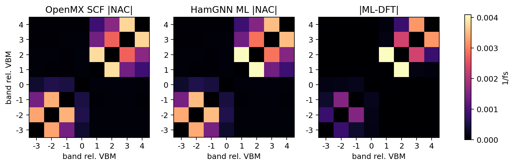

Machine Learning Hamiltonians
HamGNN OpenMX Workflow for TiO2 Hamiltonians
This note records a practical TiO2 workflow for training and testing a HamGNN Hamiltonian model from OpenMX LCAO data. The goal was not only to reproduce held-out Hamiltonian matrix elements, but also to check whether the learned Hamiltonian preserves downstream electronic-structure observables: band gaps, band dispersions, and a finite-difference nonadiabatic-coupling proxy along a longer NVE trajectory.
Background
HamGNN predicts tight-binding-like Hamiltonian blocks from crystal graphs. For an OpenMX workflow, this is naturally tied to a localized atomic-orbital basis rather than to VASP plane waves. That matters for the dataset: the labels used for training must be OpenMX Hamiltonian and overlap outputs generated with a fixed LCAO basis, pseudopotential set, and self-consistent-field protocol.
The test system here was a 48-atom TiO2 cell with 16 Ti and 32 O atoms. The OpenMX basis family used in the working scripts was Ti7.0-s3p2d1/Ti_PBE19 and O6.0-s2p2d1/O_PBE19. Molecular dynamics and static checks were staged in a private Slurm scratch workspace; the public scripts attached below use environment variables such as OPENMX_DFT_DATA, HAMGNN_ROOT, HAMGNN_CKPT, and HAMGNN_TIO2_WORKDIR instead of site-specific absolute paths.
Training Dataset
The dataset was generated from finite-temperature OpenMX molecular dynamics rather than from VASP snapshots. This avoids a basis mismatch: all subsequent HamGNN labels and validations are expressed in the OpenMX LCAO representation. The production dataset used 500 graph samples stored as an LMDB:
<PROJECT_DATA>/graph_data/graph_data.lmdbThe compact conversion and training helpers published with this note are:
npz_to_lmdb.pyrun_hamgnn_no_tb.pyconfig_lmdb_primary_resume_20260528_153543.yamlrun_train_lmdb_primary_resume_20260528_153543.slurm
Training Result
The selected checkpoint was:
<CHECKPOINT_ROOT>/epoch=97-val_loss=0.000000.ckptOn a held-out 50-graph test set, the Hamiltonian L1 loss was:
test/L1Loss_hamiltonian = 3.5117921015626052e-06This number is useful, but it is not sufficient. A Hamiltonian model should also be tested after diagonalization, because small matrix-element errors may be amplified by band crossings, small gaps, or an unstable overlap matrix.
Band-Structure Validation
A first 8 fs trajectory check was too close to the training set: the nearest training frame was only 0.00585 Angstrom RMS away. I therefore generated a new-velocity 200 fs NVT probe and compared the OpenMX and HamGNN band structures at the endpoint. The nearest old training structure was then about 0.204 Angstrom RMS away, making the test a more meaningful interpolation check.
The endpoint metrics were:
H L1 = 4.255553449183935e-06OpenMX gap = 1.719572 eVHamGNN gap = 1.725022 eVGap error = 0.005450 eV

NVE Sampling and Parallel SCF
The short band test was still too local to reveal time-dependent failures. I therefore ran a 500 fs OpenMX NVE probe starting from the same finite-temperature region, then sampled every 5 fs. This produced 101 intended static SCF frames and 100 intended finite-difference pairs. The OpenMX static SCF calculations were run as a Slurm array with 10 concurrent tasks, rather than serially.
NVE trajectory: completed in 03:46:59
Static SCF array: 101/101 frames completed
Postprocess: graph generation and HamGNN inference completed
NAC analysis: completed in 00:02:05
The NVE energy diagnostic was acceptable for a probe trajectory: total energy drift was 3.64e-4 Ha over 500 fs. The instantaneous temperature ranged from 269 K to 395 K and ended at 340 K, which is useful here because it tests the Hamiltonian model under a broader structural distribution than the short 20 fs smoke test.
The scripts used for the long probe are:
prepare_nve500_nac_inputs.pyrun_nve.slurmrun_scf_array.slurmrun_postprocess.slurmcompute_nac_compare.py
NAC Proxy Definition
I did not find a ready-made official HamGNN/OpenMX nonadiabatic-coupling driver. The comparison here therefore uses a Gamma-point finite-difference proxy:
d_ij ~= C_i^H (dH/dt - E_j dS/dt) C_j / (E_j - E_i)
The OpenMX reference uses self-consistent OpenMX Hamiltonian and overlap matrices. The ML comparison uses HamGNN-predicted Hamiltonians and the same OpenMX overlap matrices. This is a useful model-induced NAC diagnostic, but it is not a fully rigorous wavefunction-overlap NAC because it does not include an explicit cross-time AO overlap <phi_mu(R_t)|phi_nu(R_t+dt)>.
The plots use absolute values. This is intentional: eigenvectors are defined only up to a phase, or a sign in a real calculation. Without a phase-tracking step, the sign of a coupling can flip even when the physical coupling strength is unchanged. The absolute-value comparison asks whether HamGNN reproduces the magnitude and time localization of the coupling.
This also means the figures below should be read as |NAC| diagnostics, not as a production signed or complex NAC workflow. For real nonadiabatic dynamics, the inference pipeline must make the electronic gauge continuous along the trajectory before using the coupling signs or phases. A practical implementation is:
- Track band identities between adjacent frames with an overlap matrix
M_ij(t,t+dt) = <psi_i(t)|psi_j(t+dt)>, using a maximum-overlap or Hungarian assignment inside the target band window. - In an LCAO basis, compute this overlap as
C_i(t)^H S_cross(t,t+dt) C_j(t+dt), whereS_crossis the cross-time AO overlap<phi_mu(R_t)|phi_nu(R_t+dt)>. Reusing only same-frameS(t)is a useful approximation for a diagnostic, but it is not the fully consistent signed NAC object. - Fix the gauge after band matching. For an isolated real state, flip the sign so the diagonal overlap is positive; for a complex state, multiply by
exp(-i arg M_ii). For near-degenerate states, align the whole subspace with an SVD or polar decomposition of the overlap block. - After this state tracking and gauge fixing, evaluate the signed or complex finite-difference NAC from the gauge-continuous wavefunctions, or use an equivalent OpenMX derivative-output route if available.
Long-Trajectory Result
Two sampled frames, 95 fs and 490 fs, were skipped by graph_data_gen, so the final NAC comparison used 99 valid graph frames and 98 adjacent pairs. Most time steps were 5 fs; the two gaps around skipped frames were 10 fs and were handled with the actual finite-difference time interval.
HamGNN test/L1Loss_hamiltonian = 4.37791959484457e-068-band window mean |NAC|, OpenMX = 0.01355 1/fs8-band window mean |NAC|, ML = 0.01371 1/fs8-band window MAE = 0.00280 1/fs8-band window Pearson correlation = 0.921VBM-CBM mean |NAC|, OpenMX = 0.001367 1/fsVBM-CBM mean |NAC|, ML = 0.001342 1/fsVBM-CBM MAE = 1.00e-4 1/fs


ML = OpenMX relation. The plotted axes are clipped at the 99.5th percentile to keep the dense region visible. The overall correlation is 0.921, with a small number of outliers associated with higher-band or near-degenerate couplings.

Lessons Learned
- For HamGNN, the DFT interface is part of the model definition. A VASP plane-wave trajectory is useful structurally, but OpenMX H/S labels are needed for an OpenMX-LCAO Hamiltonian model.
- Very short trajectories can be misleading. The first 8 fs probe was too close to the training distribution, while the 500 fs NVE run exposed a wider temperature and structural range.
- Band gaps can look excellent even when some high-band NAC entries are fragile. Downstream diagnostics should include both band observables and coupling-like quantities.
- Absolute NAC values are only a first diagnostic. Real dynamics needs signed or complex NAC after continuous band tracking and gauge fixing.
- For a stricter NAC workflow, the next step is to add phase tracking, band tracking, and cross-time AO overlaps or an equivalent OpenMX derivative-output route.